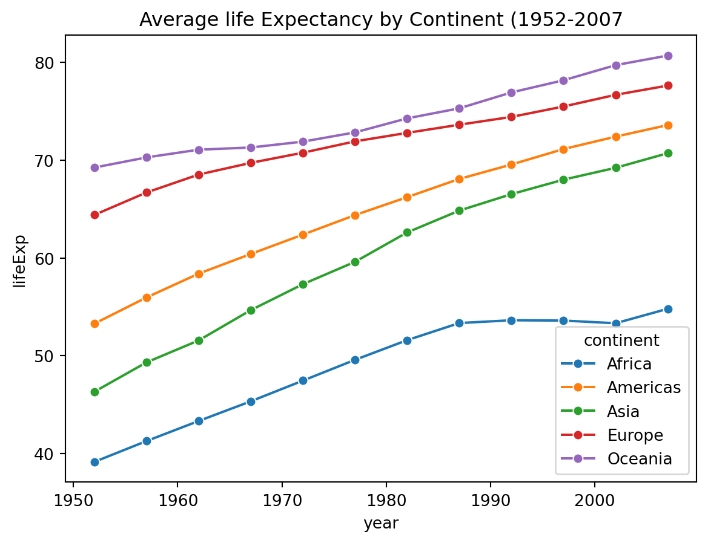
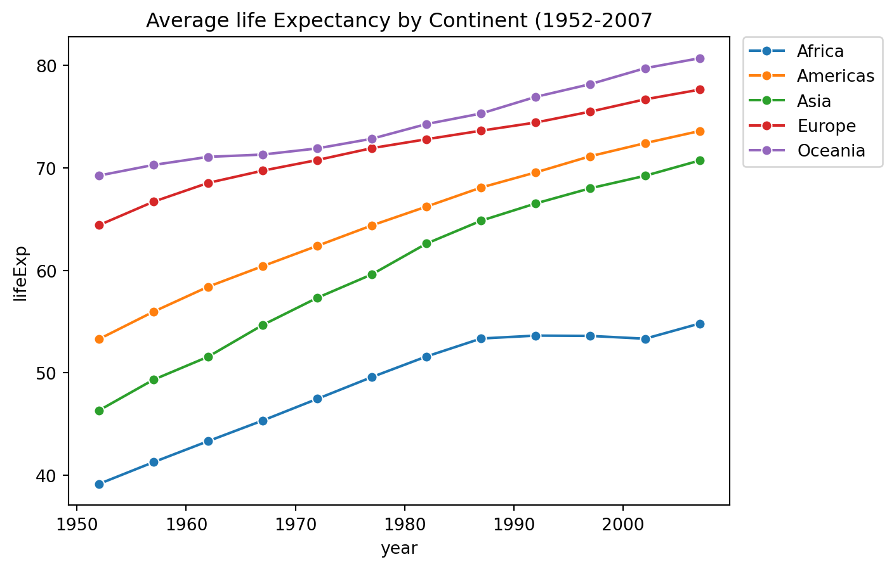

import pandas as pd
import matplotlib.pyplot as plt
import seaborn as snsExploring Gapminder Data: Life Expectancy Trends
Python
26Summer
data: gapminder.csv
Introduction
This short analysis looks at life expectancy trends in the classic Gapminder dataset (1952–2007) using Python and pandas.
Questions wanted to explore VS Explored
####Interesting Questions 1) How much life expectancy has increased or decreased in different continents in all the years? 2) What 5 countries has the highest life expectancy and which 5 has the loweest? 3) Which countries has increased or decreased life expectancy significantly in the past 20 years in comparison to what they had? 4) How does gpd per capita affect life expectancy sort by continents? 5) if gdp per capita affects life expectancy then which countries have shown this trend and what are th top countries. 6) Does population play any role woith gdp per capita?
What I explored
How has average life expectancy changed per continent over time?
Examine the data
Modules Loading
Load the data
df_raw = pd.read_csv('../../../../data/gapminder.csv')
df = df_raw.copy()Quick look at the data
print(df.head()) country year pop continent lifeExp gdpPercap
0 Afghanistan 1952 8425333.0 Asia 28.801 779.445314
1 Afghanistan 1957 9240934.0 Asia 30.332 820.853030
2 Afghanistan 1962 10267083.0 Asia 31.997 853.100710
3 Afghanistan 1967 11537966.0 Asia 34.020 836.197138
4 Afghanistan 1972 13079460.0 Asia 36.088 739.981106print(df['continent'].unique())['Asia' 'Europe' 'Africa' 'Americas' 'Oceania']Earlier Approach
Categorize data into various continents
Asia = df[df['continent']=='Asia']
Europe = df[df['continent']=='Europe']
Africa = df[df['continent']=='Africa']
Americas = df[df['continent']=='Americas']
Oceania = df[df['continent']=='Oceania']Calculate yearly average of each continent seperatly
Asia_yearly_avg = Asia.groupby('year')["lifeExp"].mean()
Europe_yearly_avg = Europe.groupby('year')["lifeExp"].mean()
Africa_yearly_avg = Africa.groupby('year')["lifeExp"].mean()
Americas_yearly_avg = Americas.groupby('year')["lifeExp"].mean()
Oceania_yearly_avg = Oceania.groupby('year')["lifeExp"].mean()Problem with this appraoch
I have all the yearly averages of continents but they are seperate.
Now I have to combine them again to plot them togather or I would have to call all the continents and put them togather.
This is annoying. I dont want to do that. I need a shortcut. I dont want to do AVENGERS ASSEMBLE. Once things are broken …. i am getting distracted. lets get back to work.
Better Appraoch
yearly_avg_by_continent = df.groupby(['continent', 'year'])['lifeExp'].mean().reset_index()Lets have a quick look
print(yearly_avg_by_continent.head(15)) continent year lifeExp
0 Africa 1952 39.135500
1 Africa 1957 41.266346
2 Africa 1962 43.319442
3 Africa 1967 45.334538
4 Africa 1972 47.450942
5 Africa 1977 49.580423
6 Africa 1982 51.592865
7 Africa 1987 53.344788
8 Africa 1992 53.629577
9 Africa 1997 53.598269
10 Africa 2002 53.325231
11 Africa 2007 54.806038
12 Americas 1952 53.279840
13 Americas 1957 55.960280
14 Americas 1962 58.398760Now things are looking good. Its plotting time.
Ploting time
sns.lineplot(data=yearly_avg_by_continent, x= 'year', y= 'lifeExp', hue= 'continent', marker = 'o')
plt.title("Average life Expectancy by Continent (1952-2007")Text(0.5, 1.0, 'Average life Expectancy by Continent (1952-2007')
Its working but the legend position is very bad. It is making the graph look bad. SO i have to adjust the legend
sns.lineplot(data=yearly_avg_by_continent, x= 'year', y= 'lifeExp', hue= 'continent', marker = 'o')
plt.title("Average life Expectancy by Continent (1952-2007")
plt.legend(
bbox_to_anchor=(1.02, 1),
loc='upper left',
borderaxespad=0.
)
plt.show()